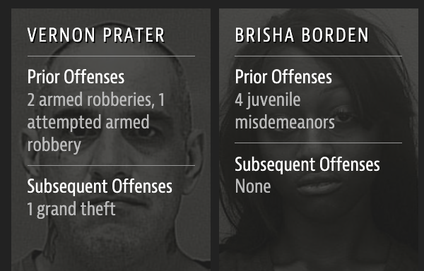
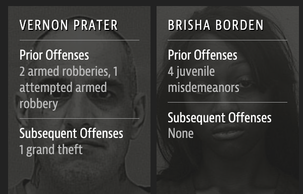
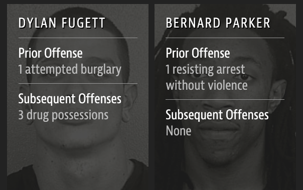

{kind=link}
library(wru)
predict_race(voter.file = voters, surname.only = TRUE) |>
select(surname, contains("pred"))Language of models
Lecture 15
Warm-up
While you wait: Participate üì±üíª
What might have been the reason for Google’s gendered translation? How do ethics play into this situation?

Scan the QR code or go to app.wooclap.com/sta199. Log in with your Duke NetID.
Announcements
Peer evaluation 2 due on Thursday at 11:59 pm
You must continue to make progress on your projects until Sunday evening in preparation for peer evaluations on Monday in lab
From last time: Algorithmic bias
Garbage in, garbage out
In statistical modeling and inference we talk about “garbage in, garbage out” – if you don’t have good (random, representative) data, results of your analysis will not be reliable or generalizable.
Corollary: Bias in, bias out.
Criminal sentencing
2016 ProPublica article on algorithm used for rating a defendant’s risk of future crime:

Source: Julia Angwin, Jeff Larson, Surya Mattu, and Lauren Kirchner. Machine Bias. 23 May 2016. ProPublica.
Risk score errors
What is common among the defendants who were assigned a high/low risk score for reoffending?
 


ProPublica analysis
Data: Risk scores assigned to >7,000 people arrested in Broward County, FL + whether they were charged with new crimes over the following 2 years.
Results:
- 20% of those predicted to commit violent crimes actually did.
- Algorithm had higher accuracy (61%) when full range of crimes taken into account (e.g. misdemeanors).

- Algorithm was more likely to falsely flag black defendants as future criminals, at almost twice the rate as white defendants.
- White defendants were mislabeled as low risk more often than black defendants.
Risk scores
How can an algorithm that doesn’t use race as input data be racist?

Predicting ethnicity
Improving Ecological Inference by Predicting Individual Ethnicity from Voter Registration Record (Imran and Khan, 2016)
In both political behavior research and voting rights litigation, turnout and vote choice for different racial groups are often inferred using aggregate election results and racial composition. Over the past several decades, many statistical methods have been proposed to address this ecological inference problem. We propose an alternative method to reduce aggregation bias by predicting individual-level ethnicity from voter registration records. Building on the existing methodological literature, we use Bayes’s rule to combine the Census Bureau’s Surname List with various information from geocoded voter registration records. We evaluate the performance of the proposed methodology using approximately nine million voter registration records from Florida, where self-reported ethnicity is available. We find that it is possible to reduce the false positive rate among Black and Latino voters to 6% and 3%, respectively, while maintaining the true positive rate above 80%. Moreover, we use our predictions to estimate turnout by race and find that our estimates yields substantially less amounts of bias and root mean squared error than standard ecological inference estimates. We provide open-source software to implement the proposed methodology. The open-source software is available for implementing the proposed methodology.
wru package
The said “source software” is the wru package: https://github.com/kosukeimai/wru.
Do you have any ethical concerns about installing this package?
wru package
Was the publication of this model ethical? Does the open-source nature of the code affect your answer? Is it ethical to use this software? Does your answer change depending on the intended use?
surname pred.whi pred.bla pred.his pred.asi pred.oth
1 Khanna 0.045110474 0.003067623 0.0068522723 0.860411906 0.084557725
2 Imai 0.052645440 0.001334812 0.0558160072 0.719376581 0.170827160
3 Rivera 0.043285692 0.008204605 0.9136195794 0.024316883 0.010573240
4 Fifield 0.895405704 0.001911388 0.0337464844 0.011079323 0.057857101
5 Zhou 0.006572555 0.001298962 0.0005388581 0.982365594 0.009224032
6 Ratkovic 0.861236727 0.008212824 0.0095395642 0.011334635 0.109676251
7 Johnson 0.543815322 0.344128607 0.0272403940 0.007405765 0.077409913
8 Lopez 0.038939877 0.004920643 0.9318797791 0.012154125 0.012105576
10 Wantchekon 0.330697188 0.194700665 0.4042849478 0.021379541 0.048937658
9 Morse 0.866360147 0.044429853 0.0246568086 0.010219712 0.054333479wru package
me <- tibble(surname = "Çetinkaya-Rundel")
predict_race(voter.file = me, surname.only = TRUE) surname pred.whi pred.bla pred.his pred.asi pred.oth
1 Çetinkaya-Rundel 0.9177967 0 0 0 0.08220329Parting thoughts
At some point during your data science learning journey you will learn tools that can be used unethically
You might also be tempted to use your knowledge in a way that is ethically questionable either because of business goals or for the pursuit of further knowledge (or because your boss told you to do so)
How do you train yourself to make the right decisions (or reduce the likelihood of accidentally making the wrong decisions) at those points?
Modeling
Two main
Prediction / classification
Description / explanation
Can you think of examples of modeling for prediction vs. modeling for explanation?
Prediction gone wrong…
Tesla thinks my garage is a semi…
{kind=link}
Source: Reddit
Leisure, commute, physical activity & BP
Background: Whether all domains of daily‐life moderate‐to‐vigorous physical activity (MVPA) are associated with lower blood pressure (BP) and how this association depends on age and body mass index remains unclear.
Methods and Results: In the population‐based Lifelines cohort (N=125,402), MVPA was assessed by the Short Questionnaire to Assess Health‐Enhancing Physical Activity, a validated questionnaire in different domains such as commuting, leisure‐time, and occupational PA. BP was assessed using the last 3 of 10 measurements after 10 minutes’ rest in the supine position. Hypertension was defined as systolic BP ≥140 mm Hg and/or diastolic BP ≥90 mm Hg and/or use of antihypertensives. In regression analysis, higher commuting and leisure‐time but not occupational MVPA related to lower BP and lower hypertension risk. Commuting‐and‐leisure‐time MVPA was associated with BP in a dose‐dependent manner. β Coefficients (95% CI) from linear regression analyses were −1.64 (−2.03 to −1.24), −2.29 (−2.68 to −1.90), and finally −2.90 (−3.29 to −2.50) mm Hg systolic BP for the low, middle, and highest tertile of MVPA compared with “No MVPA” as the reference group after adjusting for age, sex, education, smoking and alcohol use. Further adjustment for body mass index attenuated the associations by 30% to 50%, but more MVPA remained significantly associated with lower BP and lower risk of hypertension. This association was age dependent. β Coefficients (95% CI) for the highest tertiles of commuting‐and‐leisure‐time MVPA were −1.67 (−2.20 to −1.15), −3.39 (−3.94 to −2.82) and −4.64 (−6.15 to −3.14) mm Hg systolic BP in adults <40, 40 to 60, and >60 years, respectively.
Conclusions: Higher commuting and leisure‐time but not occupational MVPA were significantly associated with lower BP and lower hypertension risk at all ages, but these associations were stronger in older adults.
Byambasukh, Oyuntugs, Harold Snieder, and Eva Corpeleijn. > “Relation between leisure time, commuting, and occupational physical activity with blood pressure in 125 402 adults: the lifelines cohort.” Journal of the American Heart Association 9.4 (2020): e014313.
Modeling
Modeling cars
- What is the relationship between cars’ weights and their mileage?
- What is your best guess for a car’s MPG that weighs 3,500 pounds?
{kind=link}
Modelling cars
Describe: What is the relationship between cars’ weights and their mileage?

Modelling cars
Predict: What is your best guess for a car’s MPG that weighs 3,500 pounds?
{kind=link}
Modelling
- Use models to explain the relationship between variables and to make predictions
- For now we will focus on linear models (but there are many many other types of models too!)
Modelling vocabulary
- Predictor (explanatory variable)
- Outcome (response variable)
- Regression line
- Slope
- Intercept
- Correlation
Predictor (explanatory variable)
| mpg | wt |
|---|---|
| 21 | 2.62 |
| 21 | 2.875 |
| 22.8 | 2.32 |
| 21.4 | 3.215 |
| 18.7 | 3.44 |
| 18.1 | 3.46 |
| ... | ... |

Outcome (response variable)
{kind=link}
Regression line

Regression line: slope
{kind=link}
Regression line: intercept
{kind=link}
Correlation

Correlation
- Ranges between -1 and 1.
- Same sign as the slope.

Participate üì±üíª
Which of the following is the best guess for the correlation between the to variables on the plot below?
{kind=link}
-0.95
-0.53
0.00
0.25
0.80
Scan the QR code or go to app.wooclap.com/sta199. Log in with your Duke NetID.
Visualizing the model
ggplot(mtcars, aes(x = wt, y = mpg)) +
geom_point() +
geom_smooth(method = "lm")`geom_smooth()` using formula = 'y ~ x'
Application exercise
ae-10-modeling-fish
Go to your ae project in RStudio.
If you haven’t yet done so, make sure all of your changes up to this point are committed and pushed, i.e., there’s nothing left in your Git pane.
If you haven’t yet done so, click Pull to get today’s application exercise file: ae-10-modeling-fish.qmd.
Work through the application exercise in class, and render, commit, and push your edits.